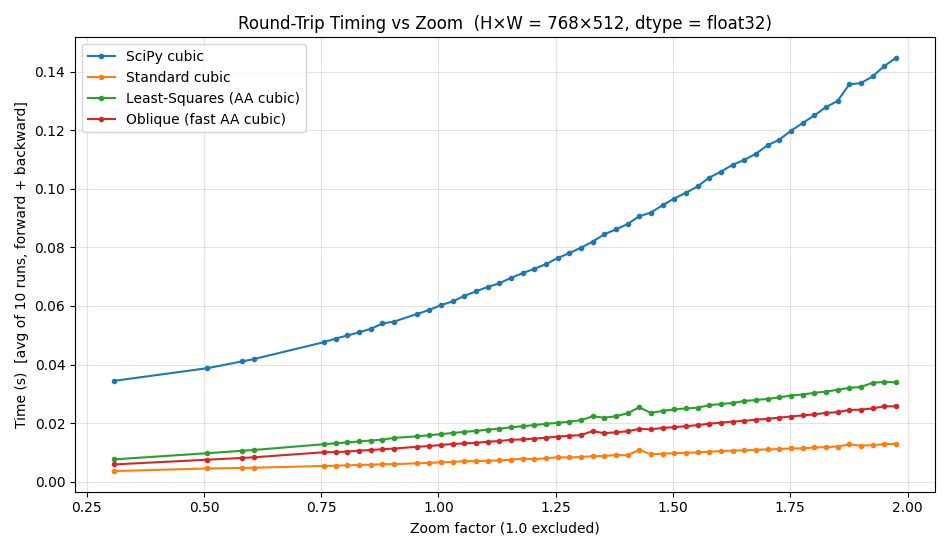
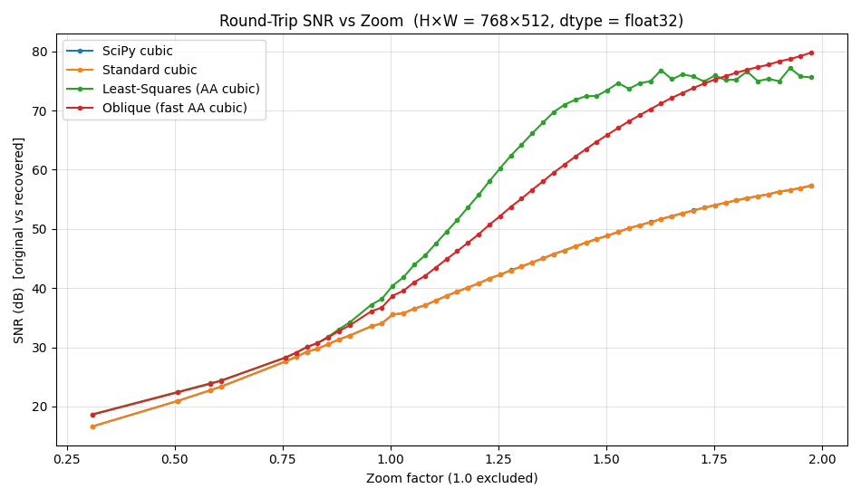

Benchmarking Plot#
This example performs a 1D sweep of zoom factors and evaluates how different 2D downsampling methods behave in terms of
round-trip runtime (downsample then upsample back to the original size),
round-trip SNR between the original and the recovered image.
We always run a forward + backward resize for each zoom, so that all methods are compared on the same task.
We compare four methods:
SciPy cubic interpolation.
Standard cubic interpolation.
Least-Squares cubic anti-aliasing.
Oblique cubic fast anti-aliasing.
By default, the benchmark runs in float32 for performance. You can switch to float64 by changing the DTYPE constant below.
Imports#
from __future__ import annotations
import math
import time
from typing import Dict, List, Tuple
import numpy as np
import matplotlib.pyplot as plt
from urllib.request import urlopen
from PIL import Image
from scipy.ndimage import zoom as _scipy_zoom
from splineops.resize import resize
from splineops.utils.specs import print_runtime_context
def fmt_ms(seconds: float) -> str:
"""Format seconds as a short 'X.X ms' string."""
return f"{seconds * 1000.0:.1f} ms"
# You can switch this to np.float64 if you want full double precision.
DTYPE = np.float32
DTYPE_NAME = np.dtype(DTYPE).name
Load and Normalize an Image#
We use a fixed test image, convert it to grayscale and normalize it to [0, 1].
KODAK_URL = "https://r0k.us/graphics/kodak/kodak/kodim19.png"
with urlopen(KODAK_URL, timeout=10) as resp:
img = Image.open(resp)
# Do the basic math in float64, then cast once to DTYPE.
data = np.asarray(img, dtype=np.float64) # H×W×3, 0–255
# Convert to [0,1] + grayscale
data01 = data / 255.0
img_gray = (
0.2989 * data01[..., 0] + # R
0.5870 * data01[..., 1] + # G
0.1140 * data01[..., 2] # B
)
# Use DTYPE (e.g. float32) for the interpolation backends.
img_gray = np.ascontiguousarray(img_gray, dtype=DTYPE)
H, W = img_gray.shape
print(f"Loaded test image: shape = {H}×{W}, dtype = {img_gray.dtype}")
Loaded test image: shape = 768×512, dtype = float32
Original Image#
For reference, we display the grayscale image that will be used throughout the benchmark.
plt.figure(figsize=(6, 6))
plt.imshow(img_gray, cmap="gray", interpolation="nearest")
plt.title("Original Grayscale Image")
plt.axis("off")
plt.tight_layout()
plt.show()
Helpers#
def roundtrip_size_ok(shape: Tuple[int, ...], z: float) -> bool:
"""Accept z only if H,W -> round(H*z) then back with 1/z returns original."""
if len(shape) < 2:
return False
H, W = int(shape[0]), int(shape[1])
H1 = int(round(H * z)); W1 = int(round(W * z))
if H1 <= 0 or W1 <= 0:
return False
H2 = int(round(H1 * (1.0 / z))); W2 = int(round(W1 * (1.0 / z)))
return (H2 == H) and (W2 == W)
def snr_db(x: np.ndarray, y: np.ndarray) -> float:
"""
Compute the SNR in dB between arrays x and y:
SNR = 10 log10( sum(x^2) / sum((x - y)^2) ).
Returns +inf for a perfect match.
"""
# Use float64 for the accumulations, regardless of storage dtype.
num = float(np.sum(x * x, dtype=np.float64))
den = float(np.sum((x - y) ** 2, dtype=np.float64))
if den == 0.0:
return float("inf")
if num == 0.0:
return -float("inf")
return 10.0 * math.log10(num / den)
Round-trip Runners#
Each method is evaluated by a round-trip (downsample then upsample back to the original shape).
def scipy_cubic_roundtrip(img: np.ndarray, z: float) -> Tuple[np.ndarray, float]:
"""Forward + backward with SciPy cubic interpolation."""
if img.ndim != 2:
raise ValueError("This example assumes a 2D grayscale image.")
zoom_fwd = (z, z)
zoom_bwd = (1.0 / z, 1.0 / z)
t0 = time.perf_counter()
down = _scipy_zoom(img, zoom=zoom_fwd, order=3, mode="reflect", prefilter=True)
rec = _scipy_zoom(down, zoom=zoom_bwd, order=3, mode="reflect", prefilter=True)
dt = time.perf_counter() - t0
return rec, dt
def spl_roundtrip(img: np.ndarray, z: float, method: str) -> Tuple[np.ndarray, float]:
"""Forward + backward with splineops.resize, using the given method preset."""
if img.ndim != 2:
raise ValueError("This example assumes a 2D grayscale image.")
zoom_fwd = (z, z)
zoom_bwd = (1.0 / z, 1.0 / z)
t0 = time.perf_counter()
down = resize(img, zoom_factors=zoom_fwd, method=method)
rec = resize(down, zoom_factors=zoom_bwd, method=method)
dt = time.perf_counter() - t0
return rec, dt
def average_time(run, repeats: int = 10):
"""
Run `run()` multiple times and return:
(last_rec, mean_time, std_time).
`run` must be a callable with no arguments returning (rec, dt).
"""
times: List[float] = []
rec = None
for _ in range(max(1, repeats)):
rec, dt = run()
times.append(dt)
times_arr = np.asarray(times, dtype=np.float64)
mean_t = float(times_arr.mean())
sd_t = float(times_arr.std(ddof=1 if times_arr.size > 1 else 0))
return rec, mean_t, sd_t
Zoom Sweep and Methods#
We sweep zoom factors and keep only those that preserve the original image size after a forward/backward round-trip.
SAMPLES = 80 # number of zoom samples in [0.01, 2.0)
REPEATS = 10 # timing repetitions per (method, zoom)
z_candidates = np.linspace(0.01, 2.0, SAMPLES, endpoint=False, dtype=np.float64)
z_candidates = z_candidates[np.abs(z_candidates - 1.0) > 1e-12] # drop z≈1.0
z_list = [float(z) for z in z_candidates if roundtrip_size_ok(img_gray.shape, float(z))]
if not z_list:
raise RuntimeError("No valid zoom factors passed the round-trip size check.")
print(f"Accepted {len(z_list)} / {len(z_candidates)} zoom factors (1.0 excluded).")
METHODS = {
"SciPy cubic": ("scipy", None),
"Standard cubic": ("splineops", "cubic"),
"Least-Squares (AA cubic)": ("splineops", "cubic-best_antialiasing"),
"Oblique (fast AA cubic)": ("splineops", "cubic-fast_antialiasing"),
}
# Storage for results
results: Dict[str, Dict[str, List[float]]] = {
name: {"z": [], "time": [], "time_sd": [], "snr": []} for name in METHODS
}
Accepted 53 / 80 zoom factors (1.0 excluded).
Run the Sweep#
For each zoom and each method we:
perform a forward + backward resize,
average the runtime over a number of runs,
compute the SNR between the original and recovered image,
store results for plotting.
for idx, z in enumerate(z_list, 1):
for name, (kind, method) in METHODS.items():
if kind == "scipy":
fn = lambda z=z: scipy_cubic_roundtrip(img_gray, z)
else:
fn = lambda z=z, m=method: spl_roundtrip(img_gray, z, m)
rec, t_mean, t_sd = average_time(fn, repeats=REPEATS)
s = snr_db(img_gray, rec)
results[name]["z"].append(z)
results[name]["time"].append(t_mean)
results[name]["time_sd"].append(t_sd)
results[name]["snr"].append(s)
Timing vs Zoom#
We start by plotting the average round-trip runtime (forward + backward) as a function of the zoom factor.
plt.figure(figsize=(9.5, 5.5))
for name, data in results.items():
z = np.asarray(data["z"], dtype=np.float64)
t = np.asarray(data["time"], dtype=np.float64)
plt.plot(z, t, marker="o", markersize=3, linewidth=1.5, label=name)
plt.xlabel("Zoom factor (1.0 excluded)")
plt.ylabel(f"Time (s) [avg of {REPEATS} runs, forward + backward]")
plt.title(f"Round-Trip Timing vs Zoom (H×W = {H}×{W}, dtype = {DTYPE_NAME})")
plt.grid(True, alpha=0.35)
plt.legend()
plt.tight_layout()
plt.show()

SNR vs Zoom#
Next, we look at the round-trip SNR for each method as a function of zoom. Points with infinite SNR (exact round-trip) are hidden to keep the scale readable; in practice they indicate numerically perfect reconstruction.
plt.figure(figsize=(9.5, 5.5))
for name, data in results.items():
z = np.asarray(data["z"], dtype=np.float64)
s = np.asarray(data["snr"], dtype=np.float64)
s_plot = np.where(np.isfinite(s), s, np.nan)
plt.plot(z, s_plot, marker="o", markersize=3, linewidth=1.5, label=name)
plt.xlabel("Zoom factor (1.0 excluded)")
plt.ylabel("SNR (dB) [original vs recovered]")
plt.title(f"Round-Trip SNR vs Zoom (H×W = {H}×{W}, dtype = {DTYPE_NAME})")
plt.grid(True, alpha=0.35)
plt.legend()
plt.tight_layout()
plt.show()

Runtime Context#
Finally, we print a short summary of the runtime environment.
print_runtime_context()
print(f"Benchmark storage dtype: {DTYPE}")
Runtime context:
Python : 3.12.12 (CPython)
OS : Linux 6.11.0-1018-azure (x86_64)
CPU : x86_64 | logical cores: 4
Process : pid=2336 | Python threads=1
NumPy/SciPy : 2.3.5/1.16.3
Matplotlib : 3.10.7 | backend: agg
splineops : 1.0.4 | native ext present: True
Extra libs : Pillow=12.0.0
SPLINEOPS_ACCEL=always
OMP_NUM_THREADS=4
Benchmark storage dtype: <class 'numpy.float32'>
Total running time of the script: (1 minutes 12.455 seconds)